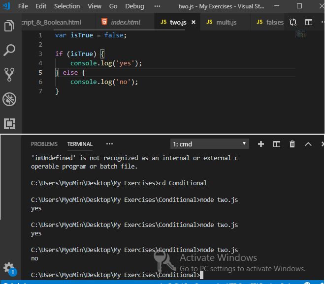
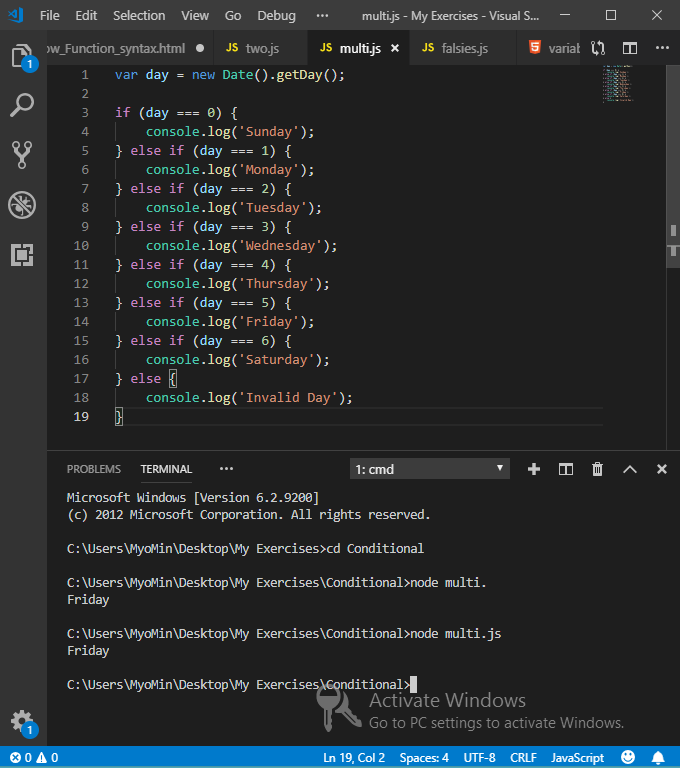

What You'll Learn
Arrow Function Syntax
ကျွန်တော်တို့ဒီတစ်ခါမှာတော့ function တွေရေးတဲ့အခါမှာအသုံးပြုတဲ့ method တစ်ခုအကြောင်းကိုပြောပြသွားမှာဖြစ်ပါတယ်။အဲ့တာကို ECMAscript 2015 မှာကတည်းကမိတ်ဆက်ခဲ့တာဖြစ်ပါတယ်။အဲ့ဒီ syntax တွေကို javaScript developers တွေကကျယ်ကျယ်ပြန့်ပြန့်အတည်ပြုထောက်ခံခဲ့ကြပါတယ်။arrow syntax ကိုအသုံးပြုကြပါတယ်ဘာ့ကြောင့်လဲဆိုတော့အဲ့တာကတိုတောင်းပြီးကျစ်လစ်ပြည့်စုံမှုရှိလို့ပဲဖြစ်ပါတယ်။နောက်ပြီးlanguage problems တွေရဲ့ callbacks တွေထဲမှာအသုံးပြုတဲ့အခါနားလည်အောင်ဖော်ပြပေးပြီးတော့လည်းဖြေရှင်းပေးနိုင်ပါတယ်။ ကျွန်တော်တို့ဥပမာထဲမှာတော့် functionတွေပါဝင်ပြီးတစ်ခုဆီမှာ function အမျိုးမျိုးပါဝင်ပါတယ်။Script 2015 မတိုင်မှာတော့function တွေကိုကြေငြာပြီးအသုံးပြုခဲ့ကြပါတယ်။ function decleration သို့မဟုတ် function expression ဆိုတဲ့နည်းလမ်းတွေပဲဖြစ်ပါတယ်။ကျွန်တော်တို့တွေ ECMAscript 2015 ကိုအသုံးပြုတဲ့အခါမှာ declaring လုပ်ဖို့အတွက်ကောင်းမွန်တဲ့အပိုင်းကတော့ constant ပြုလုပ်ဖို့အတွက် cons ဆိုတဲ့ keyword နဲ့သတ်မှတ်နိုင်တာပဲဖြစ်ပါတယ်။const ကိုအသုံးပြုခြင်းကကျွန်တေ်ာတို့ပေးထားတဲ့ function name ရဲ့ functionality ကိုမပြောင်းလဲနိုင်ပါဘူး။ဒါပေမယ့်အဲ့တာကိုပြန်ပြင်ပြီးသတ်မှတ်ဖို့အတွက်ကိုတော့ကာကွယ်ပေးပါတယ်။const ဆိုတဲ့ keyword ဆိုတာကိုသုံးပြီးဥပမာfileထဲမှာ function expression ကိုစပြီးဖော်ပြထားပါတယ်။ arrow functions တွေကတော့ expression တွေဖြစ်ပြီးတော့ function expressions တွေနဲ့ပုံစံတူတာပဲဖြစ်ပါတယ်။Arrow function expression ကိုပြောင်းဖို့ရန်အတွက် function expression ထဲကနေ function ဆိုတဲ့ keyword ကိုဖယ်ပြစ်ရမှာဖြစ်ပြီး parentheses ရဲ့နောက်မှာတော့ arrow sign လိုက်ရေးပေးရမှာဖြစ်ပါတယ်။။အဲ့ဒီနေရာမှာ equal sign နဲ့ greater than sign ကိုထည့်ပေးရမှာဖြစ်ပါတယ်။
const name = "Andrew";
const sayName = () => {
const message = "My name is " + name;
console.log(message);
}
const sayBye = () => {
console.log(SayBye = "Bye " + name);
}
နောက်တစ်ခါမှာတော့ကျွန်တော်တို့ arrow function တွေထဲမှာ argument တစ်ခုဆီထည့်ပြီးတော့တည်ဆောက်ပြထားတားပဲဖြစ်ပါတယ်။parenthesis နေရာမှာ argument ကိုထည့်ထားရမှာပဲဖြစ်ပါတယ်။ကျွန်တော်တို့တွေက multiple arguments တွေကိုလည်း comma ခြားပြီးတော့သတ်မှတ်နိုင်ပါတယ်။ multiple arguments တွေမှာလည်းပဲမလိုအပ်ပါဘူး။နောက်ပြီး return ဆိုတဲ့ keyword တွေကိုလည်းမလိုအပ်ပါဘူး။နောက်ပြီး single argument တွေမှာတော့ concise ပိုပြီးဖြစ်ဖို့အတွက်ကျွန်တော်တို့တွေ curly braces တွေကိုလည်းဖြုတ်ထားနိုင်ပါတယ်။ကျွန်တော်တို့ရဲ့ arrow function မှာ single line ပေါ်မှာရှိမှာဖြစ်ပါတယ်။ function decleration တွေ function execution တွေ arrow functions perform တွေကတော့တူညီတဲ့ task တွေပဲဖြစ်ပါတယ်။
const square = x => x * x;
const cube = x => square(x) * x;
const muliply = (x, y) => x * y;
const add = (a, b) => a + b;
const substract = (a, b) => a - b;
If,else Statement
ကျွန်တော်တို့ဒီတစ်ခါမှာတော့ javaScript code တွေထဲမှာဆုံးဖြတ်ချက်ချဖို့အတွက်ကိုယ်စားပြုတဲ့နည်းလမ်းအချို့ကိုပြောပြပေးသွားမှာဖြစ်ပါတယ်။ကျွန်တော်တို့ if နဲ့ else statements တွေကိုလေ့လာပြီးသားဖြစ်ပါတယ်။အဲ့တာကတော့ တစ်ခုနဲ့တစ်ခုကြားဖြစ်နိုင်ခြေကိုရွေးချယ်ရတာဖြစ်ပြီး
Conditional လို့လည်းခေါ်ပါတယ်။ဘာ့ကြောင့်လဲဆိုတော့ တစ်ခုကမှန်နေရင်နောက်တစ်ခုကမမှန်တဲ့အခြေမနေကိုရောက်သွားတာပဲဖြစ်ပါတယ်။If ,else statement တွေရဲ့နောက်မှာလိုက်တဲ့ paths တွေကို branches လို့ပဲခေါ်ပါတယ်။branch ဆိုတာကတော့မတူညီတဲ့ directions
တွေမှာကျွန်တော်တု့ိရဲ့ program logic တွေ့ရဲ့ flow တွေပဲဖြစ်ပြီး conditional text တွေရဲ့ results တွေပေါ်မှာအခြေခံတာပဲဖြစ်ပါတယ်။ဥပမာထဲမှာ if statement ကိုသုံးပြီး branch example နှစ်ခုကိုပြထားပါတယ်။ကျွန်တော်တို့က true ပေးထားတဲ့အခါမှာတော့
if statement ကအလုပ်လုပ်မှာဖြစ်ပြီး false ပေးလိုက်တဲ့အခါမှာတော့ else statement ကအလုပ်လုပ်မှာဖြစ်ပါတယ်။multi branching မှာလည်းအတူတူပါပဲ။ ။နောက်ထပ် multi-way branch တွေကိုလည်းဖော်ပြထားပါတယ်။အဲ့ဒီထဲမှာတော့ current date ကိုထုပ်ပြထားတာပဲဖြစ်ပါတယ်။
(1)Two Statement branch Example

(2)Multi Statement branch Example

Switch Statement
switch statement ကိုတော့ multiple branching logic တွေအတွက်အသုံးပြုပါတယ်။switch တွေကတစ်ချို့နေရာတွေမှာ if statement တွေနဲ့နည်းလမ်းတူပါတယ်။ switch ဆိုတဲ့ keyword ကိုရေးပြီးတော့ parentheses လိုက်ပေးရပါတယ်။အဲ့ဒီနောက်မှာတော့ curly brace နဲ့ code block တွေကိုထည့်ရေးရတာပဲဖြစ်ပါတယ်။parentheses ကတော့ expression ကိုထည့်ပြီးထိန်းထားဖို့ပြုလုပ်ပေးတာပဲဖြစ်ပါတယ်။အဲ့ဒီနေရာကတော့ if နဲ့မတူတာဖြစ်ပြီး case တွေအားလုံးက code block တစ်ခုထဲမှာ keyword case တစ်ခုနဲ့ပါဝင်တာပဲဖြစ်ပါတယ်။switch မှာပါတဲ့ value နဲ့ case မှာပါတဲ့နဲ့တိုက်စစ်ပြီးအလုပ်လုပ်ပေးပါတယ်။break ဆိုတာကတော့ block ထဲကနေထွက်သွားမှာဖြစ်ပြီးအခြား instructions တွေကိုသွားပြီးအလုပ်လုပ်မှာဖြစ်ပါတယ်။switch ထဲမှာ case တွေအများကြီးကိုထည့်ပြီးအသုံးပြုနိုင်ပါတယ်။switch တွေကိုရေးတဲ့အခါမှာမှားလေ့ရှိတာကတော့ break တွေကိုရေးဖို့မေ့နေခဲ့တာပဲဖြစ်ပါတယ်။နောက်ပြီး switch statement မှာpossibilities တွေကိုထပ်ပြီးသုံးနိုင်ဖို့ default option တွေကိုလည်းအသုံးပြုနိုင်ပါတယ်။အဲ့တာက else နဲ့အနည်းငယ်ဆင်တူတာပဲဖြစ်ပါတယ်။
switch (day) {
case 0:
console.log('Sunday');
break;
case 1:
console.log('Monday');
break;
case 2:
console.log('Tuesday');
break;
case 3:
console.log('Wednesday');
break;
case 4:
console.log('Thursday');
break;
case 5:
console.log('Friday');
break;
default:
console.log('Invalid Day');
break;
}
Ternary Operator
ternary Operator ကတော့အလွန်ကိုသေသပ်ပါတယ်။two-way branch ဖြစ်ပြီးတော့ကျစ်လျစ်သိပ်သည်းတဲ့ code တွေကိုရေးဖို့ရန်အတွက် programmers တွေအများစုကအသုံးပြုပါတယ်။ပြသနာတစ်ခုကတော့ code တွေကသိပ်သည်းလွန်းတဲ့အတွက်ဖတ်ဖို့အတွက်ခက်ခဲနိုင်တာပဲဖြစ်ပါတယ်။အဲ့တာကို ternary လို့ခေါ်ပါတယ်ဘာ့ကြောင့်လဲဆိုတော့အဲ့တာက expressions ၃ ခုပါလို့ပဲဖြစ်ပါတယ်။ပထမတစ်ခုကတော့ boolean ဖြစ်ပြီးတော့နောက်ထပ် expressions နှစ်ခုrun ဖို့အတွက်သတ်မှတ်ပေးတာပဲဖြစ်ပါတယ်။tenary operator တွေက character နှစ်ခုကိုအသုံးပြုပြီးတော့ question mark နဲ့ colon တစ်ခုတွေပဲဖြစ်ပါတယ်။အဲ့တာတွေက condition တွေ branches နှစ်ခုအတွက် markers တွေပဲဖြစ်ပါတယ်။ကျွန်တော်တို့အောက်မှာဥပမာအနေနဲ့တစ်ကြောင်းရေးပြထားပါတယ်။ပထမဆုံးတစ်ခုက boolean အတွက်ဖြစ်ပြီးနောက်မှာ ? question mark လိုက်ပေးရပါတယ်။အဲ့ဒီနောက်မှာတော့ if နဲ့ else တို့နဲ့ပုံစံတူပဲအလူပ်လုပ်လုပ်တဲ့ expression နှစ်ခုကို colonခြားပြီးထည့်ပေးရပါတယ်။ternary operator က if else statement တွေနဲ့တိတိကျကျတူတယ်လို့ထင်ရလောက်တဲ့အထိတူညီနေပါတယ်။ဒါပေမယ့် bare bones syntax တွေနဲ့တည်ရှိပါတယ်။ကျွန်တော်တို့တွေက variable ထဲမှာ expression တွေကို assign ပြုလုပ်နိုင်ပြီး variable တွေမှာလည်း value တွေပါဝင်နိုင်ပါတယ်။
isTrue ? console.log('yes') : console.log('no');
ternary expression တွေမှာfirst operand ရဲ့ truthiness ပေါ်မှာမှီခိုပြီးတော့ two branches နှစ်ခုကနေ value တစ်ခုကိုတော့ return ပြန်နိုင်ပါလိမ့်မယ်။larger ternary expression တွေအတွက် conditions တစ်ခုအဖြစ် expression တစ်ခုကိုထည့်ထားတဲ့အချိန်မှာ multi-way branching တွေအတွက် ternary ကိုကျွန်တော်တို့တွေအသုံးပြုနိုင်ပါတယ်။အဲ့တာအတွက် code ကိုကျွန်တော်တို့အောက်ကဥပမာထဲမှာလေ့လာနိုင်ပါတယ်။
var yesOrNo = isTrue ? 'yes' : 'no';
console.log(yesOrNo);
boolean operators တွေဖြစ်တဲ့ and နဲ့ or တွေက statementတစ်ခုထဲမှာရှိတဲ့ conditions တွေအများကြီးကို testing လုပ်တဲ့နေရာမှာအလွန်အသုံးဝင်ပါတယ်။simple programmers တွေက short Circuits တွေကိုဘယ်လိုပြုလုပ်သလဲဆိုတာကိုထမ်းဆောင်ဖို့ရန်အတွက် boolean operators တွေကိုအသုံးပြုပါတယ်။expression တစ်ခုရဲ့ evaluation ကိုရပ်တန့်ခြင်းအားဖြင့် code တွေကိုoptimize ပြုလုပ်ဖို့ရန်အခြေခံကြတဲ့နည်းလမ်းတစ်ခုဖြစ်ပါတယ်။ execute code သို့မဟုတ် value တွေကိုမြန်မြန်ဆန်ဆန် assign ပြုလုပ်ဖို့အတွက်အဲ့တာကိုမကြာခနအသုံးပြုပါတယ်။ and operator တွေကိုသုံးတဲ့အခါမှာတော့နှစ်ခုရှိရင်နှစ်ခုလုံးမှန်မှမှန်မှာပဲဖြစ်ပါတယ်။နောက်ပြီးဥပမာထဲကလိုzero ထက်ကြီးတဲ့ string တွေဆိုရင်လည်း အလုပ်လုပ်ပေးမှာပဲဖြစ်ပါတယ်။ဘာ့ကြောင့်လဲဆိုတော့အဲ့တာက truthy ဖြစ်နေလို့ပဲဖြစ်ပါတယ်။ အဲ့ဒီအခါမှာ second value ကို return ပြန်ပေးပြီး first value ကtruthy ဖြစ်နေမှာပဲဖြစ်ပါတယ်။ နောက်ထပ် string တွေထပ်ထည့်ပြီး run ရင်လည်း value တွေကိုreturn ပြန်ပေးမှာပဲဖြစ်ပါတယ်။ဘာ့ကြောင့်လဲဆိုတော့ ရှေ့က expression နှစ်ခုက truthy ဖြစ်နေလို့ပဲဖြစ်ပါတယ်။နောက်ပြီၤး javaScript interpreter တွေက expression တွေကိုဘယ်ဘက်အကျဆုံးကနေစပြီၤး right ဘက်ကိုရွှေ့သွားတာပဲဖြစ်ပါတယ်။ကျွန်တော်တို့ ဥပမာထဲမှာထဲမှာလို false ထည့်ပြီးရေးတဲ့အခါမှာတော့ false ကိုပဲထွက်လာမှာဖြစ်ပါတယ်။နောက်ထပ် expression တွေကိုထပ်ပြီးစစ်မှာမဟုတ်တော့ပါဘူး။အဲ့ဒီအချိန်မှာ false က short -circuit ဖြစ်နေလို့ပဲဖြစ်ပါတယ်။
console.log(3 === 3 && false && 'cow');
// return cow
console.log(3 === 3 && 'cow' && 'chicken');
//return chicken
console.log(3 === 3 && false && 'chicken');
//return false
3 === 3 && false && console.log('chicken');
//return chicken
နောက်ထပ်ကျွန်တော်တို့ and operator တွေနေရာမှာ or operator တွေအစားထိုးပြီးအသုံးပြုတာကိုလေ့လာသွားမှာပဲဖြစ်ပါတယ်။ကျွန်တော်တို့ equility operator တွေကတော့ boolean value တွေကို return ပြန်ပေးတာပဲဖြစ်ပါတယ်။or operators တွေကိုသုံးတဲ့အခါမှာတော့ truthy ဖြစ်နေတာကို return ပြန်ပေးမှာပဲဖြစ်ပါတယ်။if else statements တွေကmultiple branches တွေအတွက်ပိုပြီးကောင်းမွန်ပါတယ်။ဒါပေမယ့် short circuting တွေကလည်းအသုံးဝင်တဲ့နည်းလမ်းတွေဖြစ်တယ်ဆိုတာကိုကျွန်တော်တို့ဖော်ပြသွားမှာဖြစ်ပါတယ်။ ကျွန်တော်တို့ဥပမာထဲမှာ for loop တွေကော function ထဲမှာရေးပြထားပါတယ်။ဒါပေမယ့်ကျွန်တော်တို့က default value တွေကို or operator တွေနဲ့သတ်မှတ်တဲ့အခါမှာတော့သတိထားဖို့လိုအပ်ပါတယ်။အဲ့တာတွေက valid value တွေကို falsey ဖြစ်မဖြစ်ဆိုတာကိုဆုံးဖြတ်မပေးနိုင်ပါဘူး။ECMAScript 2015 မှာတော့ short circuting တွေအသုံးဝင်မှူနည်းသွားအောင်လို့ function တွေမှာ default parameters တွေကိုမိတ်ဆက်ခဲ့ပါတယ်။ကျွန်တော်တို့က function decleartion ထဲမှာ parameter တွေကိုသတ်မှတ်ပေးခဲ့လို့ရပါတယ်။
function countToFive(start = 1) {
for (var i = start; i <= 5; i += 1) {
console.log(i);
}
}
countToFive(0);
function greet(name) {
name && console.log('Hi,' + name + '!');
}
greet('san');


Can Request Example project File